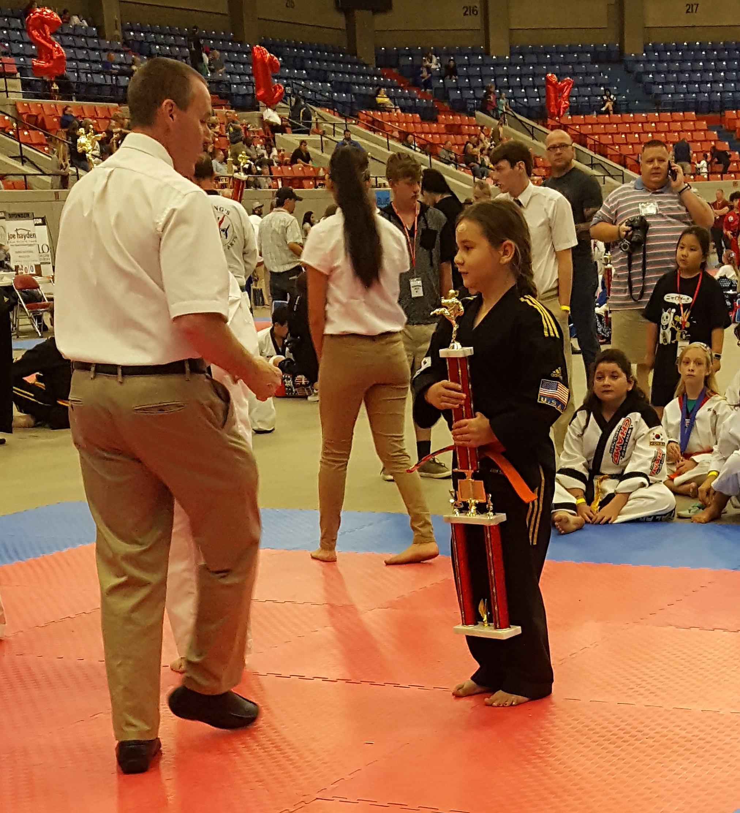
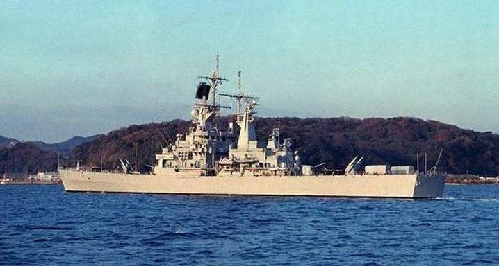

Recently our daughters along with my wife and I have started participating in Tae Kwon Do. This has been a great way to spend time together as a family as well as a way to get us all more active. Our youngest daughter started in February and then our oldest daughter, my wife and I started in May. Since starting, our oldest daughter has been invited to join the school's demonstration team and our daughters and I have participated in one tournament. Here is our youngest daughter receiving a first place trophy at that tournament.
I spent 8 years serving in the US Navy as a nuclear power plant operator. It was during this time that I met my wife and our first two children were born. I spent 2 years as a student, 4 years as an operator and 2 years as an instructor. The majority of my time in the navy was spent assigned to the USS Arkansas (CGN-41). During my time on the Arkansas I visited various ports along the west coast, Canada, Alaska, Hawaii, Japan, Hong Kong, Singapore, Australlia and Bahrain.
